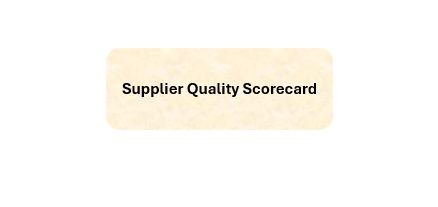

Reporting
Je conçois des tableaux de bord pensés pour la lecture rapide et l’aide à la décision.
Portfolio Data & BI
Data Analyst | Power BI | SQL | Python
Je construis des analyses et des tableaux de bord utiles, lisibles et fiables. Mon travail se situe à l’interface entre besoin métier, structuration des données et restitution claire.

Ce que je fais
Je conçois des tableaux de bord pensés pour la lecture rapide et l’aide à la décision.
J’explore les données pour faire ressortir ce qui compte vraiment, sans surcharge inutile.
Je travaille sur la cohérence des données et la qualité des indicateurs pour un rendu plus solide.
J’expérimente aussi les usages autour des agents IA, du prompt engineering et de l’automatisation ciblée.
Projets

Power BI · DAX · RLS
Une scorecard fournisseurs conçue pour rendre l’évaluation plus lisible, plus rapide et plus fiable.

Python · Préprocessing · EDA
Nettoyage, préparation et exploration d’un jeu de données bancaire pour en extraire des pistes d’analyse utiles.
Navigation
Le site est organisé pour aller à l’essentiel : comprendre mon profil, voir mes projets et me contacter facilement.